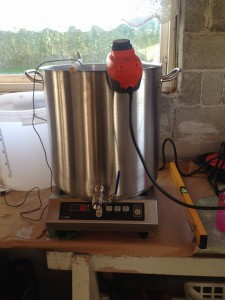
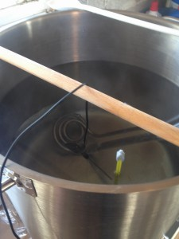
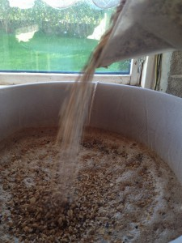
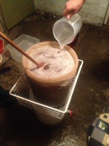
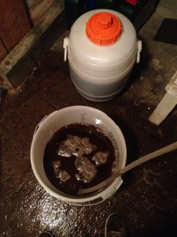

Vi tenkte å lage en slags juleøl nr. 2 i tillegg til batch #4. Valget falt på en amerikansk havrestout. Oppskriften til denne batchen er nok en gang levert av Gahr Smith-Gahrsen, en kahr som for tiden jobber som bryggemester på 7 fjell. Det skal etter sigende bli en ”kraftig men kremet stout med aromatiske innslag av rund kaffe, bitter sjokolade, eik og lær. Humlepreget er ikke overveldende, men tilfører et lett fruktig preg med toner av marmelade og solbær. Havren gir ølet en myk munnfølelse som balanserer de fremtredende notene av ristet malt”. VI FÅR SE.

Det er ikke mange ting vi har gjort før. Vi har riktignok lagt bak oss 4 hele brygg men det er ikke altfor mange i den store sammenhengen. Likevel føler vi at vi har fått såpass med rutine at vi kan tillate oss å begynne å tenke nytt. Bryggedag på mandag ettermiddag er resultatet av en slik nytenking. Siden vi tross alt er et ”hornmusik & haandbryggerlaug” gir det seg selv at ikke alle kan stille hver bryggedag siden haandbryggerlauget er involvert i minst 3 ulike hornmusiklaug, og mandager er noen ganger bedre enn lørdager og søndager. Vi lar det i alle fall ikke stå uprøvd.
Etter å ha lagt inn oppskriften i Beersmith™, som tar høyde for mange flere teknikaliteter enn det fem enkle sjeler klarer å regne om, satte husfar i HH&H sitt satelittbryggeri på Randaberg 34,69 liter vann til oppvarming rett før middag. Det var på dette tidspunktet at mistanken om et defekt digitaltermometer ble vekket. Avlesninger viste henholdsvis 84.6, 72.3 og 44.0 grader i romtemperatur, alle innenfor få sekunder. Feilsøking ble foretatt og en smeltet bit av sensorledningen ble klippet av for så å bli loddet fast og krympestrømpet igjen av mr. Fixit. Akkurat når denne smeltingen kan ha skjedd er ikke lett å tidsbestemme men indisiene peker mot en tidligere bryggedag, da mest sannsynlig #4: Amber Christmas Korea Blow-up.


Etter å ha satt på mer wattasje startet mesking da gryta hold 70,6 grader, denne temperaturen sank så til 63.2 (målet var 64). Beersmith™ holder det han lover.
Middag kunne nå spises.

Tips 2: en slik meskegryte har en meget variabel temperatur.Dette betyr at man må røre mye og ikke spise middag.
Selve bryggingen forløp forholdsvis greit men innimellom omstikking og flasking av #4 ble det avglemt en viktig ting, nemlig å varme opp skyllevann. Beersmith™ sa vi skulle varme 22 liter men det begynner å bli temmelig fullt i gryta med 13,3 kilo gryn og greier. Så vi overstyrte BS og målte bare opp 20 liter i et kar og varmet dette med koreawatten. Det å begynne varming av skyllevann tidlig er såpass viktig at det må få et eget punkt, se under:
Tips 3: SETT PÅ SKYLLEVANN NÅR DU BEGYNNER Å MESKE!
Da skyllevannet nådde 80 grader begynte vi å skylle siden det begynte å bli mørkt og dermed snart seint. BS sa egentlig at det burde nå 94 for best utmesk men på dette tidspunktet lot vi BS være BS.


Nå måtte unnlatelsessynden ved å bare varme 20 liter betales. Det var langt opp til kanten av gryta og vi har fått litt små kvanta øl på flaske i det siste. Det ble besluttet å fylle til kanten ved en skylling nummer 2 (5-6 liter). Mer øl ble vurdert som viktigere enn supersterkt øl. Og godt er det – vi nådde en postboil OG på 1.068 der oppskriften sier 1.067. Neiogneiognei. Preboil ble ikke målt før etter en tid, da måleglasset ble satt ut for hurtig avkjøling og avglemt. Hydrometeret stoppet på 1.060 v. 15 grader, ingen aning om hva det betyr ved 20 grader men det er jo ikke viktig.
Vi har anskaffet litt nytt dingseri siden sist, blant annet et refraktometer (ser ut som et saksofonmunnstykke) som skal gjøre målingen av OG og etter hvert SG enklere. For å kalibrere dette må man måle både med hydrometer og refraktometer i starten.
1.068 OG ble målt til ca 16 brix. Det skal bli spennende å se hva dette egentlig vil si, men vi har i alle fall en ny dings og en ny målenhet.
Koking og humling gikk etter planen (mye snerk på toppen!) og 21:26 ble kjøling iverksatt. Det gikk ikke lang tid før noen innså at noen ikke hadde husket å rehydrere gjæren. Enda mer venting der altså, da vann må kokes og kjøles før gjæren skal få kose seg. Pga liten tålmodighet ble det ikke ventet til gjæren ble ”kremaktig” før den ble fordelt i gjæringskarene, vi satser på det ikke har all verden å si for resultatet da mange bare drysser tørrgjær i karene.


Vi fikk 21 + 20 liter vørter over i gjæringskar og panikken bredte seg dagen derpå da bobling lot vente på seg og husfar kom på at det burde vært 3 pakker tørrgjær og ikke 2. Det ble derfor iverksatt rehydrering av en ekstra pakke US-05 og fordelt. Dag 2 bobler det fint i begge kar og det ligger et skumlag øverst og koser seg.
Som nevnt i starten, vi har begynt å få rutine på ting:
Fredrik tok en ”Fredrik” og var utenbys denne dagen.
Jonas tok en ”Jonas” og reiste på korpsting.
Leif tok en ”Leif” og svidde koreawatten.
Gaute tok en ”Gaute” og kom innom en tur.
Steffen tok en ”Steffen” og glemte å varme skyllevann.

RIP risterøyk! Du vil bli savnet
Gleder meg til å få en myk munnfølelse med balanserte noter av ristet malt!
Kul etikett, men Haandbryggeri = Haandbryggerlaug? Eller åpner jeg et vepsebol nå?
Noen har rett og andre feil. Historien vil vise at det står Haandbryggerlaug på etiketten 🙂